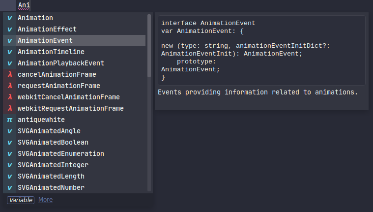

Features
Commands and shortcuts#
Plugin commands#
- Restart Servers: kills all language servers belonging to the active window
- This command only works when in a supported document.
- It may change in the future to be always available, or only kill the relevant language server.
- LSP Settings: Opens package settings.
Document actions#
- Show Code Actions: UNBOUND
- Symbol References:
shift+f12 - Rename Symbol: UNBOUND
- Recommendation: Override
F2(next bookmark)
- Recommendation: Override
- Go to definition / type definition / declaration / implementation: UNBOUND
- Recommendation: Override
f12(built-in goto definition), - LSP falls back to ST3's built-in goto definition command in case LSP fails.
- Recommendation: Override
- Format Document: UNBOUND
- Format Selection: UNBOUND
- Document Symbols: UNBOUND
Workspace actions#
- Show Diagnostics Panel:
super+shift+M/ctr+alt+M - Next/Previous Diagnostic From panel:
F4/shift+F4 - Workspace Symbol Search: via command Palette
LSP: workspace symbol
Execute server commands#
For LSP servers that can handle workspace/executeCommand, you can make these commands available into the sublime palette by adding an entry to your existing .sublime-commands file or by creating a new one.
Example:
[
// ...
{
"caption": "Thread First",
"command": "lsp_execute",
"args": {
"command_name": "thread-first",
"command_args": ["${file_uri}", 0, 0]
}
}
]
command_args is optional depending on the workspace/executeCommand that are supported by the LSP server.
The following variables will be expanded, but only if they are top-level array items and not within nested arrays or objects:
| Variable | Type | Description |
|---|---|---|
"$document_id" or "${document_id}" |
object | Mapping { 'uri': string } containing the file URI of the active view, see Document Identifier |
"$file_uri" or "${file_uri}" |
string | File URI of the active view |
"$selection" or "${selection}" |
string | Content of the (topmost) selection |
"$offset" or "${offset}" |
int | Character offset of the (topmost) cursor position |
"$selection_begin" or "${selection_begin}" |
int | Character offset of the begin of the (topmost) selection |
"$selection_end" or "${selection_end}" |
int | Character offset of the end of the (topmost) selection |
"$position" or "${position}" |
object | Mapping { 'line': int, 'character': int } of the (topmost) cursor position, see Position |
"$range" or "${range} |
object | Mapping with 'start' and 'end' positions of the (topmost) selection, see Range |
Overriding keybindings#
LSP's keybindings can be edited from the Preferences: LSP Keybindings command from the command palette.
There is a special context called lsp.session_with_capability that can check whether there is a language server active
with the given LSP capability.
Refer to the ServerCapabilities structure in that link.
The following example overrides ctrl+r to use LSP's symbol provider when we're in a javascript or typescript view:
{
"command": "lsp_document_symbols",
"keys": [
"ctrl+r"
],
"context": [
{
"key": "lsp.session_with_capability",
"operator": "equal",
"operand": "documentSymbolProvider"
},
{
"key": "selector",
"operator": "equal",
"operand": "source.ts, source.js"
}
]
},
More useful keybindings (OS-X), edit Package Settings -> LSP -> Key Bindings
{ "keys": ["f2"], "command": "lsp_symbol_rename" },
{ "keys": ["f12"], "command": "lsp_symbol_definition" },
{ "keys": ["super+option+r"], "command": "lsp_document_symbols" },
{ "keys": ["super+option+h"], "command": "lsp_hover"}
Show autocomplete documentation#
Some completion items can have documentation associated with them.

To show the documentation popup you can click the More link in the bottom of the autocomplete, or you can use the default sublime keybinding F12 to trigger it.
You can change the default keybinding by remapping the command as below:
{
"command": "auto_complete_open_link",
"keys": ["f12"],
"context": [
{
"key": "auto_complete_visible",
"operator": "equal",
"operand": true
}
]
},
{
"command": "lsp_symbol_definition",
"keys": [
"f12"
],
"context": [
{
"key": "lsp.session_with_capability",
"operator": "equal",
"operand": "definitionProvider"
},
{
"key": "auto_complete_visible",
"operator": "equal",
"operand": false
}
]
},
Mouse map configuration#
See below link, but bind to lsp_symbol_definition command
https://stackoverflow.com/questions/16235706/sublime-3-set-key-map-for-function-goto-definition
Configuring#
Sublime settings#
Add these settings to LSP settings, your Sublime settings, Syntax-specific settings and/or in Project files.
lsp_format_on_savefalserun the server's formatProvider (if supported) on a document before saving.lsp_code_actions_on_save{}request code actions with specified identifiers to trigger before saving.
Package settings (LSP)#
inhibit_word_completionstruedisable sublime word completioninhibit_snippet_completionsfalsedisable sublime snippet completionshow_code_actionsannotationShow code actions: "annotation", "bulb"code_action_on_save_timeout_ms2000the amount of time the code actions on save are allowed to run forshow_references_in_quick_panelfalseshow symbol references in Sublime's quick panel instead of the bottom panelshow_view_statustrueshow permanent language server status in the status bar- 'diagnostics_delay_ms'
0delay showing diagnostics by this many milliseconds diagnostics_additional_delay_auto_complete_ms0additional delay when the AC widget is visibleauto_show_diagnostics_panelalways(never,saved) open the diagnostics panel automatically if there are diagnosticsshow_diagnostics_count_in_view_statusfalseshow errors and warnings count in the status barshow_diagnostics_in_view_statustruewhen on a diagnostic with the cursor, show the text in the status bardiagnostics_highlight_style"underline"highlight style of code diagnostics: "box", "underline", "stippled", "squiggly" or ""highlight_active_signature_parameter: highlight the active parameter of the currently active signaturedocument_highlight_style: document highlight style: "box", "underline", "stippled", "squiggly" or ""document_highlight_scopes: customize your sublime text scopes for document highlightingdiagnostics_gutter_marker"dot"gutter marker for code diagnostics: "dot", "circle", "bookmark", "sign" or ""show_symbol_action_linksfalseshow links to symbol actions like go to, references and rename in the hover popupdisabled_capabilities,[]Turn off client capabilities (features): "hover", "completion", "documentHighlight", "colorProvider", "signatureHelp", "codeLensProvider", "codeActionProvider"log_debugfalseshow debug logging in the sublime consolelog_server[]log communication from and to language serverslog_stderrfalseshow language server stderr output in the consolelog_max_size8192max number of characters of payloads to print